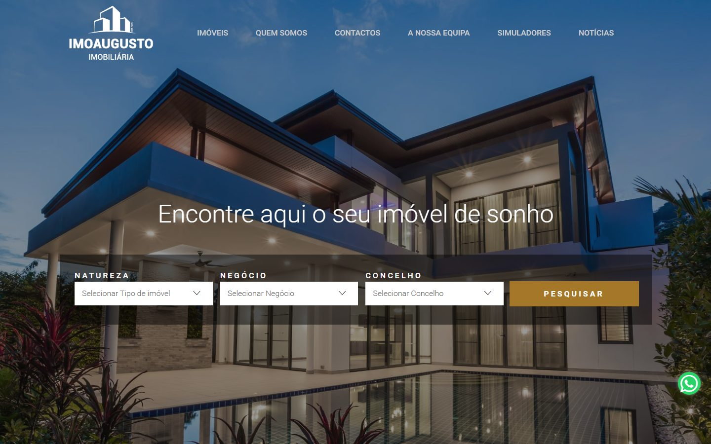
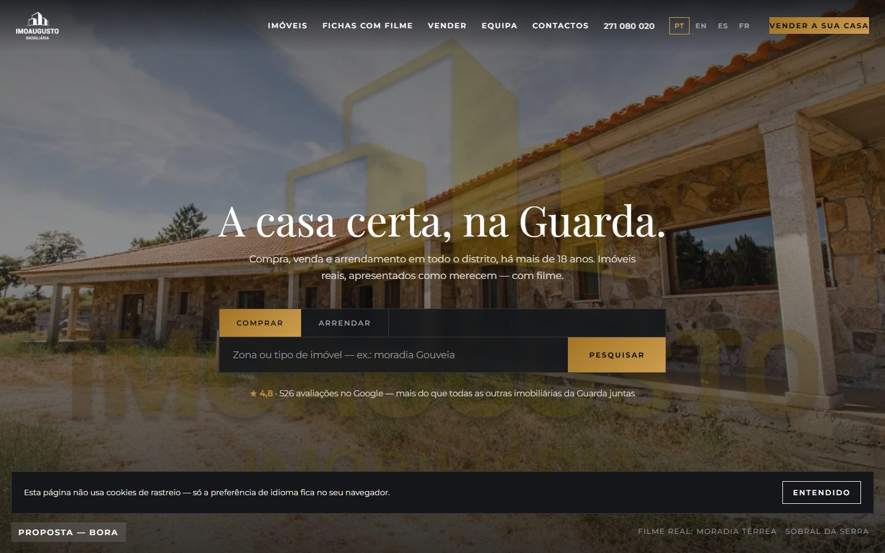
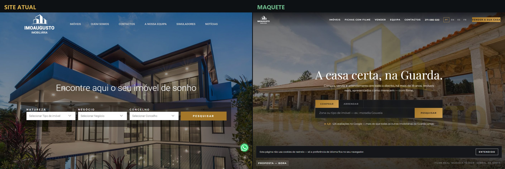

Capturas reais do trabalho da linha de propostas. Esta pasta existe para a Claude.ai ver com os próprios olhos (noindex; permitida no robots).



# Teste dos 3 segundos — ImoAugusto (home refeita) > Juiz de visão: executor da sessão (Claude), 2026-08-31. > Pergunta única: "qual destes dois parece o site mais caro e mais profissional?" ## VEREDITO: A MAQUETE GANHA (à terceira tentativa — e fica registado o caminho) ## O que aconteceu pelo caminho 1ª tentativa (a página creme de ontem): PERDEU para o site real deles — foi o veredito do Danilo que abriu esta sessão, e confirma-se: o herói deles em ecrã cheio + pesquisa ganhava à nossa página vazia. 2ª tentativa (herói com a foto panorâmica): ainda perdia — a marca de água amarela queimada nas fotos deles lavava o céu e a vivenda de banco deles continuava a brilhar mais. 3ª tentativa: herói na fotografia da varanda alongada (pedra quente, diagonais, profundidade), recorte baixo que dilui a marca de água, véu central mais escuro, e o FILME real da moradia térrea a correr por cima. ## Porquê ganha agora, em concreto À esquerda: vivenda tropical de banco de imagens ao crepúsculo — bonita, mas anónima: podia ser de qualquer agência do mundo, e não é um imóvel da Guarda. Título genérico. Zero prova social. À direita: um imóvel REAL da carteira deles em ecrã cheio (e ao vivo, em filme com movimento), "A casa certa, na Guarda." em serifada editorial, pesquisa com paridade total (Comprar|Arrendar + Pesquisar em dourado — o dourado verdadeiro da marca deles), e a linha que mais custa a ignorar: "★ 4,8 · 526 avaliações no Google — mais do que todas as outras imobiliárias da Guarda juntas". No critério "caro": equilibrado no brilho, nosso na tipografia. No critério "profissional": nosso com folga — específico, provado e da terra. Nota honesta: a marca de água deles continua visível nas fotos (está queimada nos originais que eles próprios servem) — no filme em movimento dilui-se. Compostos: `3segundos-1440.png` e `3segundos-390.png` nesta pasta.